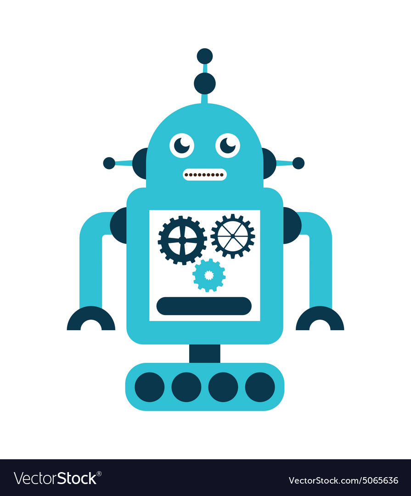
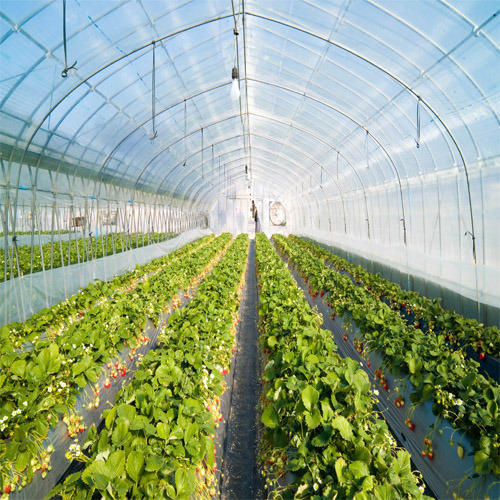
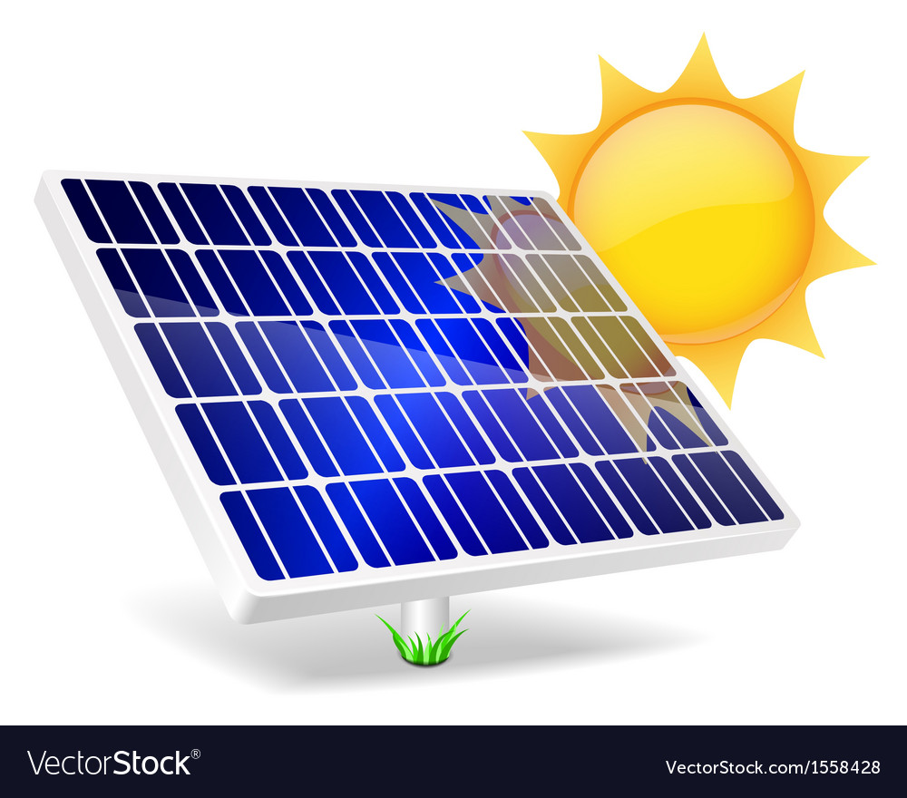
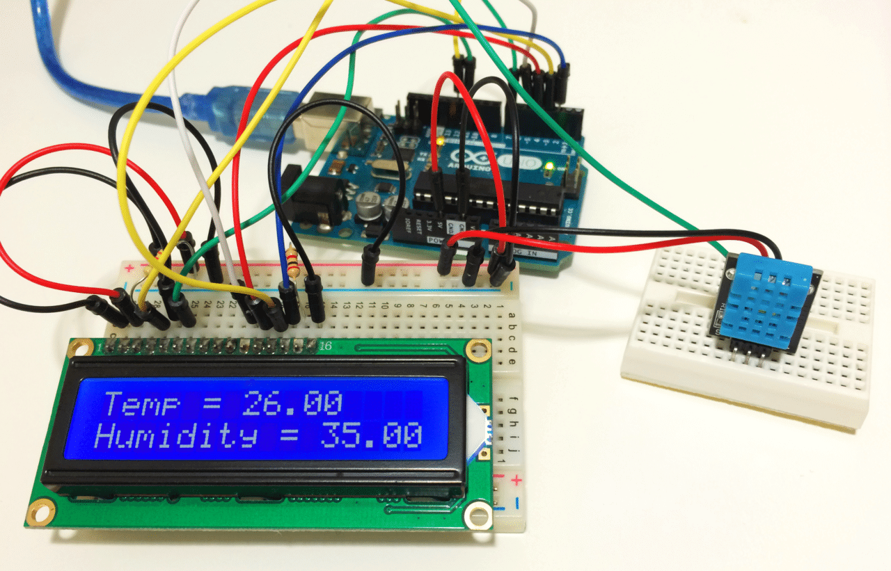

Agriculture provides both food and job opportunities for people across the World.
However, farmers are increasingly moving out of their traditional farming due to various
problem like high input costs, labor shortage, decreasing farm yield etc.
AGAI’s farming solution using AI and IoT techniques in agriculture is aimed at
making Farmers self-sustainable. AGAI’s solution uses modern technologies like
AI Bots, Automated Sprinklers, Solar Panels, Poly house Infrastructure,and,more to
help farmers realize better yield from their farms.
Context
Farmers in India today are moving out of their business due many problems like not getting value for their
yield, not able to cultivate due to water shortage, high input and labour costs, financial issues like debts, land problems
and more. Farmers are unable to market their produce efficiently at the right time and at the right price.
These issues discourage newer and younger generation taking up farming as a profession.
Key Challenges
- Farmers
- Lack of knowledge of new techniques in agriculture.
- Farmers are unable to pay for new technologies due to high costs.
- Farmers dependent on external (Govt) help & subsidies.
- Lack of interests among new generation in taking up farming.
- Lack of access to competitive markets to sell the produce.
- Produce
- Increase in usage of hazardous fertilizer making the produce toxic.
- Demand of agricultural products are high, but supply is less.
- Mismatch in demand & supply due to uniform farming patterns.
- Outdated techniques
- Unscientific irrigation of crops.
- Inappropriate usage of fertilizers.
- Shortage of Manpower for farm work.
- Unpredictable Natural conditions.
- Government
- High cost incurred due to import of agro products.
- Provide best quality grains nation-wide.
- Trained manpower with new farming techniques.
- Develop economy, by improving farm production.
Solution
AI-IoT farming in agriculture fields improves the method of farming and instill farmers with new techniques
to cultivate crops that reduces frequent human interventions and yield a high-quality raw food material.
Agriculture being heart of every country needs to be improvised, focused and modernized with possible latest
technology to be a better grower in terms of providing healthy pasturage. AGAI introduced AI & IoT based technology
in agriculture to enable farmers adopt new techniques to improve their farm yield.
Solution Highlights
AI Bots
Artificial intelligence bots monitor & regulate the temperature, soil moisture, & wind speed.
It also eliminates human efforts for sowing & harvesting by moving around a specific path.
 Polyhouse
made by polythene helps farmers to grow variety of crops like hybrid flowers, mushrooms,etc.
under controlled infrastructure of temperature, light, soil.
Solar panels & LED
Cost-cutting method to minimize the usage of electricity for irrigation purpose.
LED enables full-time growth in plants providing alternative source for sunlight during night.
Temperature sensors
Identifies change in temperature and reset to required temperature for the crop cultivation.
Farmers can plan their sowing and harvest period accordingly.
Result
Using solutions provided by AGAI, Cauvery Farms transformed its farming practices which resulted in
quality yield of the products,return on investments,risks mitigated in prior and technology served agriculture.
MINIMIZED
Expenditure using solar energy and other machinery provided.
INCREASED
Return on Investment by connecting with consumer directly.
DEMINISHED
Labor requirements with introduction of Artificial intelligence (AI) Bots.
REDUCED
Damages to yield by using controlled infrastructure cultivation.